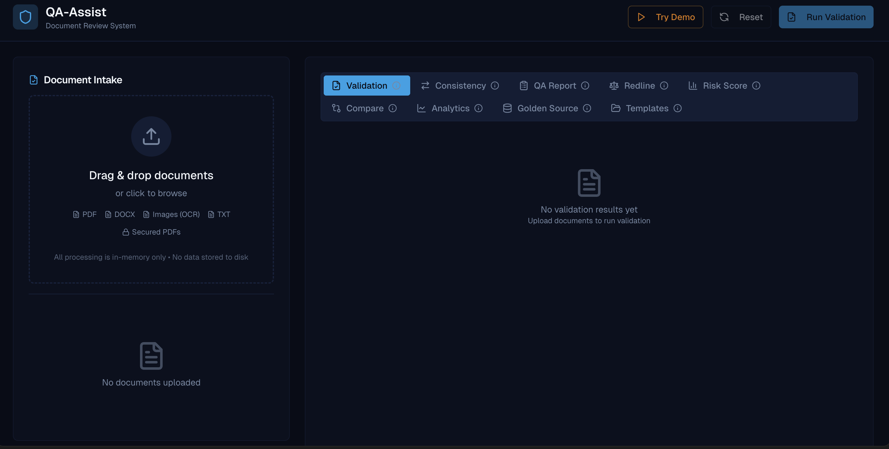

QA-Assist Document Review System
QA-Assist is an automation tool designed to streamline the review of legal documents. By pre-checking uploaded documents and flagging potential critical issues, it drastically reduces manual review time while ensuring high accuracy and consistency.
Key Achievements / Impact:
- ⚡ Boosted efficiency: Automated pre-review reduces manual workload, letting analysts focus on critical tasks
- 🛡️ Improved accuracy: Flags inconsistencies and errors, minimizing human error
- ⏱️ Enhanced analyst experience: Reduces repetitive work and fatigue, improving productivity
- 📈 Leadership in innovation: Conceptualized and proposed the tool to the LOB, demonstrating initiative and strategic thinking
Key Features
- Upload TXT, secured or unsecured PDF, OCR (images) and DOCX files.
- Extract text and validate documents against explicit compliance rules.
- Check consistency across multiple documents.
- Generate QA Summary Reports for easy review and tracking.
- Dynamically create a checklist of required documents based on user input.
- Logic to skip documents that were previously reviewed or overridden.